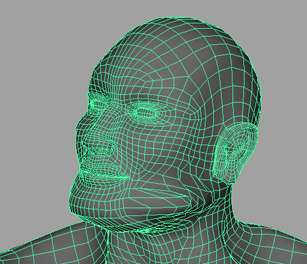
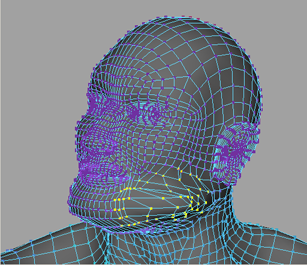
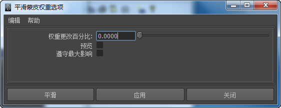
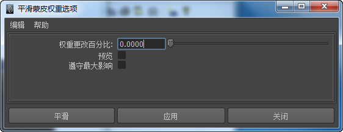
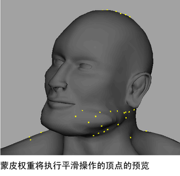
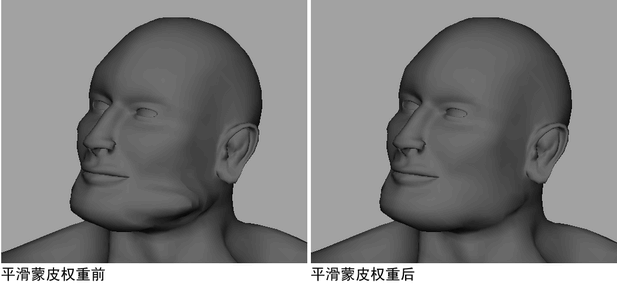

自动平滑边界角色的蒙皮权重
- 执行下列操作之一：
- 选择要平滑其蒙皮权重的边界曲面。 
- 在边界曲面上选择要平滑其权重的特定顶点。 
- 选择要平滑其蒙皮权重的边界曲面。
- 选择“蒙皮 > 平滑蒙皮权重”(Skin > Smooth Skin Weights) >
 以打开平滑蒙皮权重选项。 
以打开平滑蒙皮权重选项。  - 调整平滑蒙皮权重的“所需权重差异”(Required Weight Difference)值。请参见平滑蒙皮权重选项中的所需权重差异。 注： 在边界曲面上平滑所有顶点时，需要设定大于 0.0 的“所需权重差异”(Required Weight Difference)值。
- （可选）启用“预览”(Preview)，然后单击“应用”(Apply)以在场景视图中亮显将通过“平滑蒙皮权重”(Smooth Skin Weights)操作进行平滑的顶点。顶点亮显为黄色。 提示：
如果许多顶点在角色上亮显为黄色（例如，在上面的图像中），则“所需权重差异”(Required Weight Difference)值太低，应增加该值。
- 单击“平滑”(Smooth)。 
提示： 您也可以使用权重锤工具来修复区域以避免不必要的变形。请参见修复平滑权重。